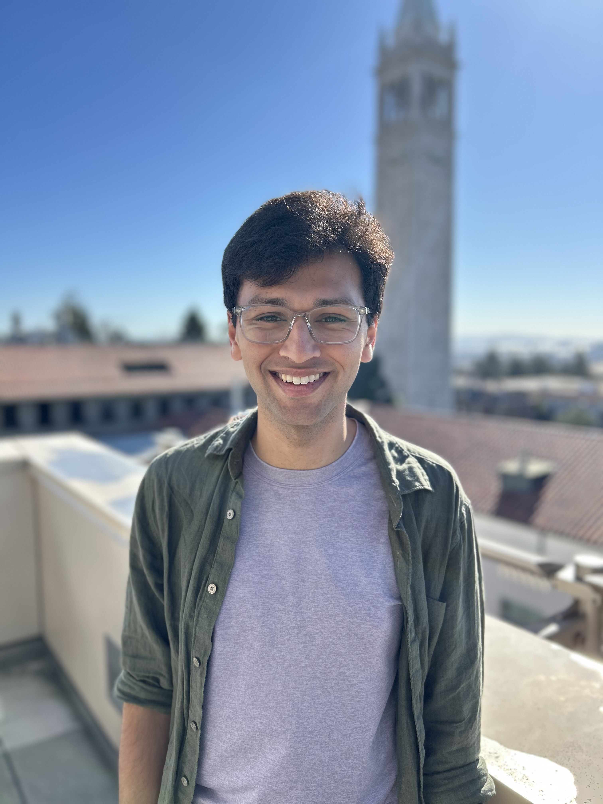
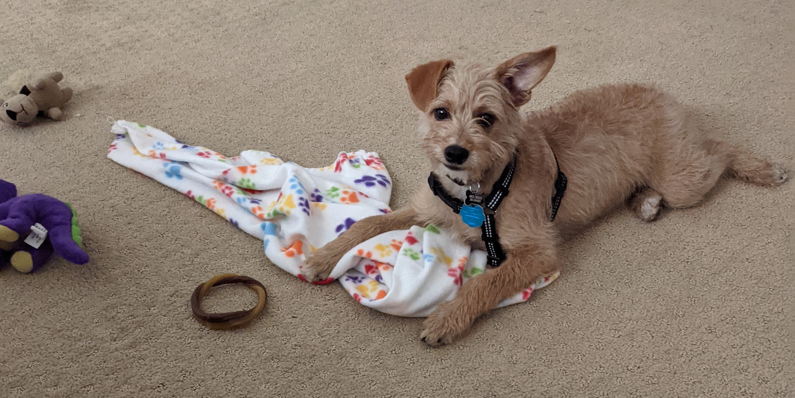

I'm a finishing graduate student and NSF Fellow at UC Berkeley. In Fall 2025, I'll be starting as a 51 Pegasi b fellow at Caltech. For my PhD, I worked with Eugene Chiang on problems in planetary science. I also received my undergraduate degrees in physics and astrophysics from Berkeley in 2019. As an undergrad I mostly worked with Oleg Gnedin on modeling the formation of stellar clusters across cosmic time.
Theoretical astrophysics. Areas of expertise include celestial mechanics, planet formation, planet-disk hydrodynamic simulations, chondrule formation, globular clusters.
CV and publications (first-author and all).
Some past talks:
Are globular clusters simple after all?
The star clusters that make black hole binaries across cosmic time
 I grew up in Michigan, near Ann Arbor, before I ran away from the cold and moved to Berkeley. In my free time, I play tennis, dabble in the nerd grab bag of books and television, and play with my dog, Hank.